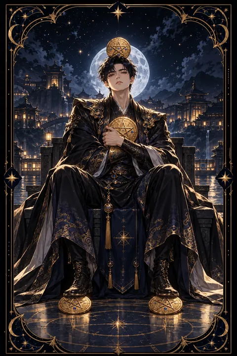

펜타클 4 카드 — 지키는 안정과 집착 사이
펜타클 4 카드 한눈에 보기
펜타클 4 카드 상징 읽기

동네보살의 카드 그림은 전통 라이더–웨이트 덱의 뜻을 새 그림으로 옮긴 것입니다. 아래 상징 설명은 전통 덱의 그림을 기준으로 합니다.
한 남자가 금화 한 닢을 두 팔로 가슴에 꼭 끌어안은 채 앉아 있습니다. 머리에 쓴 왕관 위에도 금화가 한 닢 올려져 있고 두 발 아래에도 금화를 한 닢씩 밟고 있습니다.
머리 위의 금화는 생각까지 재물에 쏠려 있음을, 가슴의 금화는 마음을, 발밑의 금화는 삶의 기반을 재물로 단단히 붙들고 있음을 나타냅니다. 온몸으로 가진 것을 지키려는 자세입니다.
등 뒤에는 건물이 빼곡한 도시가 펼쳐져 있지만 남자는 그쪽을 바라보지 않습니다. 성공과 안정을 이루었으나 바깥세상과 사람들로부터 스스로를 떼어 놓은 모습이기도 합니다.
이 카드는 안정과 절약의 가치를 인정하면서도 지나치게 움켜쥔 손이 새로운 흐름을 막을 수 있다는 점을 함께 보여 줍니다. 두 팔이 금화에 묶여 있으니 새로운 것을 잡을 손이 남아 있지 않다는 점을 눈여겨보아야 합니다.
펜타클 4 카드 정방향 뜻
정방향 펜타클 4는 애써 모은 것을 지키고 안정된 기반을 다지는 시기를 뜻합니다. 지출을 관리하고 저축을 늘리며 생활의 틀을 단단히 잡기에 좋은 때입니다.
이 카드는 스스로를 보호하는 힘을 칭찬합니다. 남의 부추김에 휩쓸려 쉽게 돈을 쓰거나 무리한 약속을 하지 않는 신중함이 지금은 큰 장점입니다. 비상금을 마련하고 고정 지출을 점검해 두면 앞으로의 변화에도 흔들리지 않습니다.
다만 지키는 것이 지나치면 막는 것이 됩니다. 꼭 필요한 곳에도 돈을 쓰지 못하거나 사람과의 관계에서 마음을 닫게 되면 안정은 외로움으로 바뀔 수 있습니다. 모을 몫과 쓸 몫을 미리 나눠 두면 마음 편히 지키면서도 흐름을 잃지 않을 수 있습니다. 안정은 목표가 아니라 다음 걸음을 위한 발판이라는 점을 기억해 두세요. 튼튼한 바닥이 있어야 새로운 시도도 두렵지 않습니다.
펜타클 4 카드 역방향 뜻
역방향 펜타클 4는 쥐는 힘이 흔들리는 상태를 보여 줍니다. 한편으로는 지나친 인색함과 집착이 심해져 사람과의 관계가 상할 수 있고 다른 편으로는 억눌렀던 소비 욕구가 터져 씀씀이가 헤퍼질 수 있습니다.
불안감이 이런 행동의 뿌리인 경우가 많습니다. 잃을까 봐 두려운 마음이 너무 크면 오히려 판단이 흐려지고 충동적인 선택을 하기 쉽습니다.
긍정적으로 읽으면 꽉 쥐고 있던 손을 풀고 나눔을 배우는 시기이기도 합니다. 지난 지출을 차분히 돌아보고 아껴서 오히려 손해를 본 곳과 충동적으로 쓴 곳을 구분해 보세요. 지켜야 할 것과 흘려보내도 될 것을 가려내면 돈도 마음도 한결 가벼워집니다. 모을 통장과 쓸 통장을 따로 두는 것처럼 구조를 바꾸면 마음의 불안도 함께 줄어듭니다. 필요하다면 믿을 만한 사람과 돈 계획을 함께 점검해 보세요.
연애에서 펜타클 4 카드
솔로라면 쉽게 마음을 열지 않는 시기입니다. 신중한 것은 좋지만 상처받을까 봐 모든 가능성을 미리 막아 두고 있지 않은지 살펴보는 시간이 필요합니다. 조금씩 마음의 문을 열어야 믿을 만한 인연도 들어올 수 있습니다.
곁에 연인이 있다면 관계를 지키려는 마음이 강한 때입니다. 안정적이고 믿음직한 모습은 장점이지만 상대를 소유하려 하거나 질투로 행동을 제한하면 관계가 답답해집니다. 상대에게 자유로운 시간을 보장하고 자신의 속마음도 솔직하게 표현해 보세요. 돈 문제로 다툼이 생겼다면 누가 더 쓰는지를 따지기보다 함께 쓸 예산을 정하는 방식이 효과적입니다. 꽉 쥔 손보다 편하게 잡은 손이 더 오래갑니다. 마음의 여유를 가질수록 상대도 편안하게 곁에 머뭅니다. 함께 모으는 목표를 정해 보는 것도 좋습니다.
재회·속마음 질문에서 펜타클 4 카드
재회를 묻는 자리에서 펜타클 4가 나오면 한쪽 혹은 양쪽 모두 과거의 감정이나 상처를 꽉 붙들고 있는 상태일 수 있습니다. 상대는 쉽게 마음을 내어 주지 않으려 하고 당신 역시 놓지 못한 미련에 머물러 있을 수 있습니다. 재회를 원한다면 먼저 집착과 그리움을 구분해 보세요. 상대를 붙잡으려는 연락보다 스스로의 삶을 안정시키는 모습이 오히려 닫힌 마음을 여는 열쇠가 됩니다. 지난 관계에서 무엇을 놓지 못했는지 차분히 적어 보면 감정이 한결 정리됩니다. 억지로 마음을 되돌리려 하기보다 서로에게 숨 쉴 공간을 주는 편이 좋습니다. 여유를 되찾은 뒤의 가벼운 연락이 오히려 닫힌 문을 조금씩 열어 줍니다.
일·금전에서 펜타클 4 카드
일과 직장에서는 현재의 자리와 입지를 굳건히 지키는 것이 유리한 시기입니다. 무리한 이직이나 새로운 모험보다 맡은 일에서 성과를 쌓는 편이 안정적입니다. 다만 자기 업무를 혼자 끌어안고 정보를 나누지 않으면 협업에서 소외될 수 있습니다.
금전 면에서는 저축과 절약에 강한 흐름입니다. 비상금을 마련하고 고정 지출을 정리하기에 좋습니다. 그러나 꼭 필요한 자기 계발이나 장비에는 아끼지 않는 판단도 필요합니다. 동료와 정보를 나누고 도움을 주고받으면 입지가 오히려 더 단단해집니다. 지켜 온 자리를 발판 삼아 필요한 기술을 하나씩 더해 가는 것도 좋은 전략입니다. 가진 것을 지키는 힘과 나누는 여유가 함께 있을 때 평가도 좋아집니다.
펜타클 4 카드는 예일까 아니오일까
지금 가진 것을 지키는 데는 유리하지만 변화나 새 시작에는 소극적인 카드라 조건부 답에 가깝습니다. 뒤집혀 나오면 움켜쥔 것을 풀어야 흐름이 열린다는 뜻이 강해집니다.
자주 묻는 질문
펜타클 4 카드 역방향은 나쁜 뜻인가요?
역방향 펜타클 4는 쥐는 힘이 흔들리는 상태를 보여 줍니다. 한편으로는 지나친 인색함과 집착이 심해져 사람과의 관계가 상할 수 있고 다른 편으로는 억눌렀던 소비 욕구가 터져 씀씀이가 헤퍼질 수 있습니다.
펜타클 4 카드가 연애 질문에 나오면요?
솔로라면 쉽게 마음을 열지 않는 시기입니다. 신중한 것은 좋지만 상처받을까 봐 모든 가능성을 미리 막아 두고 있지 않은지 살펴보는 시간이 필요합니다. 조금씩 마음의 문을 열어야 믿을 만한 인연도 들어올 수 있습니다.
타로 카드는 어떻게 뽑나요?
타로 카드 페이지에서 78장을 섞으면 그중 22장이 펼쳐집니다. 마음이 가는 세 장을 고르면 과거·현재·미래 자리에 놓이고, 한 장씩 뒤집어 자리와 방향에 맞는 풀이를 읽습니다. 정방향과 역방향은 섞는 순간 정해집니다.